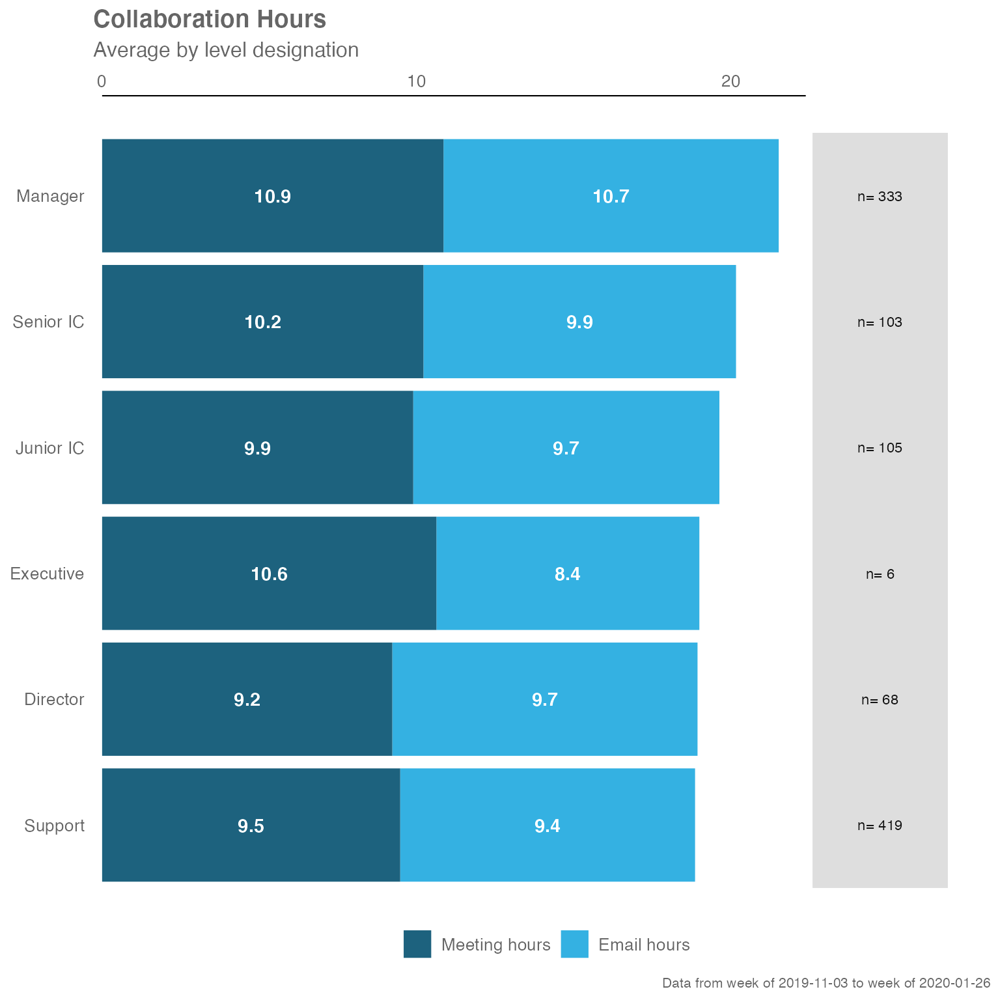
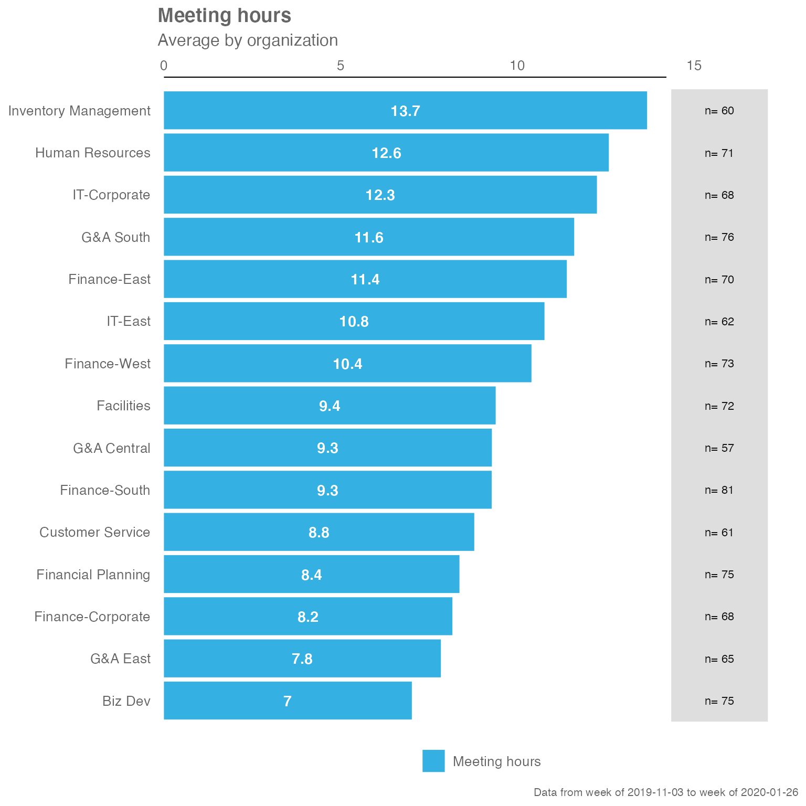
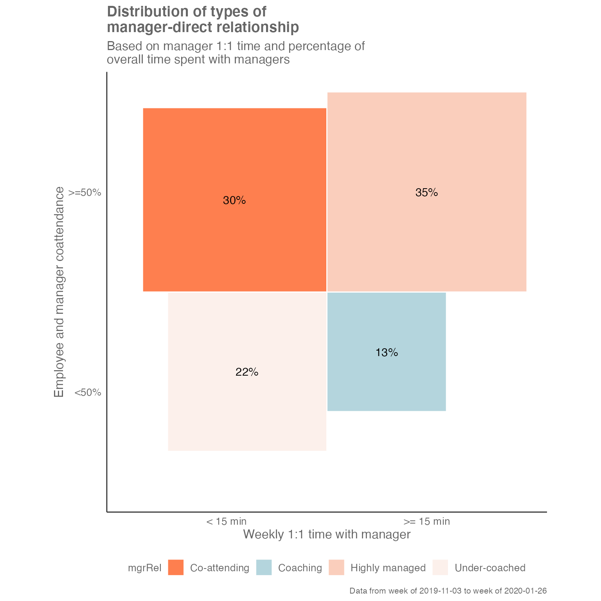

Background
This document walks through the wpa package, and provides some examples on how to use some of the functions. For our full online documentation for the package, please visit https://microsoft.github.io/wpa/. For anything else related to Workplace Analytics, please visit https://docs.microsoft.com/en-us/workplace-analytics/.
Setting up
To start off using wpa, you’ll have to load it by running library(wpa). For the purpose of our examples, let’s also load dplyr as a component package of tidyverse (alternatively, you can just run library(tidyverse):
The package ships with a standard Person query dataset sq_data:
data("sq_data") # Standard Query data
# Check what the first ten columns look like
sq_data %>%
.[,1:10] %>%
glimpse()
#> Rows: 13,442
#> Columns: 10
#> $ PersonId <chr> "93F763956FFC939A5DDE7D…
#> $ Date <chr> "11/3/2019", "11/10/201…
#> $ Workweek_span <dbl> 42.50652, 39.78644, 42.…
#> $ Meetings_with_skip_level <dbl> 0, 0, 0, 0, 0, 0, 0, 1,…
#> $ Meeting_hours_with_skip_level <dbl> 0.00, 0.00, 0.00, 0.00,…
#> $ Generated_workload_email_hours <dbl> 12.283767, 11.890209, 9…
#> $ Generated_workload_email_recipients <dbl> 179, 171, 131, 108, 78,…
#> $ Generated_workload_instant_messages_hours <dbl> 1.0815250, 1.1650000, 0…
#> $ Generated_workload_instant_messages_recipients <dbl> 96, 94, 60, 61, 39, 64,…
#> $ Generated_workload_call_hours <dbl> 0.5000000, 0.0000000, 5…Example Analysis
Collaboration Summary
The collaboration_summary() function allows you to generate a stacked bar plot summarising the email and meeting hours by an HR attribute you specify:
sq_data %>% collaboration_summary(hrvar = "LevelDesignation")
By changing the hrvar() argument, you can change the data being shown easily:
sq_data %>% collaboration_summary(hrvar = "Organization")
The collaboration_summary() function also comes with an option to return summary tables, rather than plots. Just specify “table” in the return argument:
sq_data %>% collaboration_summary(hrvar = "LevelDesignation", return = "table")
#> # A tibble: 6 x 5
#> group Meeting_hours Email_hours Total Employee_Count
#> <chr> <dbl> <dbl> <dbl> <int>
#> 1 Director 9.22 9.70 18.9 68
#> 2 Executive 10.6 8.36 19.0 6
#> 3 Junior IC 9.89 9.73 19.6 105
#> 4 Manager 10.9 10.7 21.5 333
#> 5 Senior IC 10.2 9.94 20.1 103
#> 6 Support 9.47 9.37 18.8 419Summary of Key Metrics
The keymetrics_scan() function allows you to produce summary metrics from the Standard Person Query data. Similar to most of the functions in this package, you can specify what output to return with the return argument. In addition, you have to specify which HR attribute/variable to use as a grouping variable with the hrvar argument.
There are two valid return values for keymetrics_scan():
- Heat map (
return = "plot") - Summary table (
return = "table")
And here are what the outputs look like.
Heatmap:
sq_data %>% keymetrics_scan(hrvar = "Organization", return = "plot")
Summary table:
sq_data %>% keymetrics_scan(hrvar = "Organization", return = "table")
#> # A tibble: 19 x 16
#> variable `Biz Dev` `Customer Servic… Facilities `Finance-Corpora…
#> <fct> <dbl> <dbl> <dbl> <dbl>
#> 1 Workweek_span 37.2 41.3 43.1 39.5
#> 2 Collaboration_hours 14.7 18.3 18.6 16.3
#> 3 After_hours_collabo… 2.00 2.78 2.85 2.36
#> 4 Meetings 7.63 9.72 9.96 8.73
#> 5 Meeting_hours 7.02 8.78 9.39 8.16
#> 6 After_hours_meeting… 0.722 1.20 1.21 0.959
#> 7 Low_quality_meeting… 4.52 6.67 6.79 5.60
#> 8 Meeting_hours_with_… 0.237 0.354 0.255 0.241
#> 9 Meeting_hours_with_… 3.60 5.10 5.53 4.44
#> 10 Emails_sent 39.3 45.4 44.5 40.3
#> 11 Email_hours 7.72 9.49 9.20 8.13
#> 12 After_hours_email_h… 1.27 1.58 1.64 1.40
#> 13 Generated_workload_… 7.98 10.0 9.53 8.34
#> 14 Total_focus_hours 33.1 31.3 30.5 31.9
#> 15 Internal_network_si… 41.5 41.5 37.0 37.4
#> 16 Networking_outside_… 3.47 3.53 3.21 3.31
#> 17 External_network_si… 4.07 4.40 6.19 4.80
#> 18 Networking_outside_… 2.09 2.29 3.38 2.69
#> 19 Employee_Count 75 61 72 68
#> # … with 11 more variables: Finance-East <dbl>, Finance-South <dbl>,
#> # Finance-West <dbl>, Financial Planning <dbl>, G&A Central <dbl>,
#> # G&A East <dbl>, G&A South <dbl>, Human Resources <dbl>,
#> # Inventory Management <dbl>, IT-Corporate <dbl>, IT-East <dbl>Meeting Habits
The meeting_summary() provides a very similar output to the previous functions, but focusses on meeting habit data. Again, the input data is the Standard Query, and you will need to specify a HR attribute/variable to use as a grouping variable with the hrvar argument.
There are two valid return values for meeting_summary():
- Heat map (
return = "plot") - Summary table (
return = "table")
The idea is that functions in this package will share a consistent design, and the required arguments and outputs will be what users ‘expect’ as they explore the package. The benefit of this is to improve ease of use and adoption.
And here are what the outputs look like, for meeting_summary().
Heatmap:
sq_data %>% meeting_summary(hrvar = "Organization", return = "plot")
Summary table:
sq_data %>% meeting_summary(hrvar = "Organization", return = "table")
#> # A tibble: 15 x 3
#> group Meeting_hours n
#> <chr> <dbl> <int>
#> 1 Biz Dev 7.02 75
#> 2 Customer Service 8.78 61
#> 3 Facilities 9.39 72
#> 4 Finance-Corporate 8.16 68
#> 5 Finance-East 11.4 70
#> 6 Finance-South 9.27 81
#> 7 Finance-West 10.4 73
#> 8 Financial Planning 8.36 75
#> 9 G&A Central 9.28 57
#> 10 G&A East 7.84 65
#> 11 G&A South 11.6 76
#> 12 Human Resources 12.6 71
#> 13 Inventory Management 13.7 60
#> 14 IT-Corporate 12.3 68
#> 15 IT-East 10.8 62Manager Relationship 2x2 Matrix
The mgrrel_matrix() function from {wpa} enables you to plot a 2 by 2 matrix straight from the Standard Query data, which is returned as a ggplot object:
sq_data %>% mgrrel_matrix()
By changing the return argument, you can also return a summary table:
sq_data %>% mgrrel_matrix(hrvar = "LevelDesignation", return = "table")
#> # A tibble: 20 x 4
#> mgrRel LevelDesignation n perc
#> <fct> <chr> <int> <dbl>
#> 1 Co-attending Junior IC 40 0.381
#> 2 Co-attending Manager 78 0.234
#> 3 Co-attending Senior IC 32 0.311
#> 4 Co-attending Support 159 0.379
#> 5 Coaching Director 23 0.338
#> 6 Coaching Executive 2 0.333
#> 7 Coaching Junior IC 4 0.0381
#> 8 Coaching Manager 67 0.201
#> 9 Coaching Senior IC 10 0.0971
#> 10 Coaching Support 24 0.0573
#> 11 Highly managed Junior IC 51 0.486
#> 12 Highly managed Manager 82 0.246
#> 13 Highly managed Senior IC 47 0.456
#> 14 Highly managed Support 184 0.439
#> 15 Under-coached Director 45 0.662
#> 16 Under-coached Executive 4 0.667
#> 17 Under-coached Junior IC 10 0.0952
#> 18 Under-coached Manager 106 0.318
#> 19 Under-coached Senior IC 14 0.136
#> 20 Under-coached Support 52 0.124Alternatively, you can return the input data that is used to create the plot:
sq_data %>% mgrrel_matrix(hrvar = "LevelDesignation", return = "chartdata")
#> # A tibble: 20 x 10
#> LevelDesignation mgr1on1 coattendande n perc xmin xmax ymin ymax
#> <chr> <chr> <chr> <int> <dbl> <dbl> <dbl> <dbl> <dbl>
#> 1 Director < 15 min <50% 45 0.662 -0.813 0 -0.813 0
#> 2 Director >= 15 m… <50% 23 0.338 0 0.582 -0.582 0
#> 3 Executive < 15 min <50% 4 0.667 -0.816 0 -0.816 0
#> 4 Executive >= 15 m… <50% 2 0.333 0 0.577 -0.577 0
#> 5 Junior IC < 15 min <50% 10 0.0952 -0.309 0 -0.309 0
#> 6 Junior IC < 15 min >=50% 40 0.381 -0.617 0 0 0.617
#> 7 Junior IC >= 15 m… <50% 4 0.0381 0 0.195 -0.195 0
#> 8 Junior IC >= 15 m… >=50% 51 0.486 0 0.697 0 0.697
#> 9 Manager < 15 min <50% 106 0.318 -0.564 0 -0.564 0
#> 10 Manager < 15 min >=50% 78 0.234 -0.484 0 0 0.484
#> 11 Manager >= 15 m… <50% 67 0.201 0 0.449 -0.449 0
#> 12 Manager >= 15 m… >=50% 82 0.246 0 0.496 0 0.496
#> 13 Senior IC < 15 min <50% 14 0.136 -0.369 0 -0.369 0
#> 14 Senior IC < 15 min >=50% 32 0.311 -0.557 0 0 0.557
#> 15 Senior IC >= 15 m… <50% 10 0.0971 0 0.312 -0.312 0
#> 16 Senior IC >= 15 m… >=50% 47 0.456 0 0.676 0 0.676
#> 17 Support < 15 min <50% 52 0.124 -0.352 0 -0.352 0
#> 18 Support < 15 min >=50% 159 0.379 -0.616 0 0 0.616
#> 19 Support >= 15 m… <50% 24 0.0573 0 0.239 -0.239 0
#> 20 Support >= 15 m… >=50% 184 0.439 0 0.663 0 0.663
#> # … with 1 more variable: mgrRel <fct>Distribution of Time spent with Manager
The mgrcoatt_dist() function generates the distribution of meeting co-attendence rate of staff with managers.
sq_data %>% mgrcoatt_dist(hrvar = "LevelDesignation")A table can be generated:
sq_data %>% mgrcoatt_dist(hrvar = "LevelDesignation", return = "table")
#> # A tibble: 6 x 5
#> group `0 - 25%` `25 - 50%` `50 - 75%` `75% +`
#> <chr> <dbl> <dbl> <dbl> <dbl>
#> 1 Director 1 NA NA NA
#> 2 Executive 1 NA NA NA
#> 3 Junior IC NA 0.133 0.524 0.343
#> 4 Manager 0.417 0.102 0.282 0.198
#> 5 Senior IC NA 0.233 0.417 0.350
#> 6 Support 0.00239 0.177 0.430 0.391Customizing plot outputs
With a few rare exceptions such as track_HR_change(), the majority of plot outputs returned by wpa functions are ggplot outputs. What this means is that there is a lot of flexibility in adding or overriding visual elements in the plots. For instance, you can take the following ‘fizzy drink’ (jittered scatter) plot:
sq_data %>%
workloads_fizz(hrvar = "LevelDesignation", return = "plot")
… and add custom titles, subtitles, and flip the axes by adding ggplot layers:
library(ggplot2) # Requires ggplot2 for customizations
sq_data %>%
workloads_fizz(hrvar = "LevelDesignation", return = "plot") +
labs(title = "This is a custom title",
subtitle = "This is a custom sub-title") +
coord_flip() # Flip coordinates
#> Coordinate system already present. Adding new coordinate system, which will replace the existing one.
Note that the “pipe” syntax changes from %>% to + once you are manipulating a ggplot output, which will return an error if not used correctly.
Adding customized elements may ‘break’ the visualization, so please exercise caution when doing so.
For more information on ggplot, please visit https://ggplot2.tidyverse.org/.
Getting a quick overview of Standard Person Query data
The collaboration_report() function enables you to get a quick view of the Standard Query data by producing an automated HTML report. This can be done by passing the dataset as the argument:
sq_data %>% collaboration_report()Running the function will open up a HTML report in your browser, summarising the key collaboration metrics and plots of the Standard Person Query. You can manually save this report, or only have it open as an ad-hoc reference document.
Feedback
Hope you found this useful! If you have any suggestions or feedback, please log them at https://github.com/microsoft/wpa/issues/.